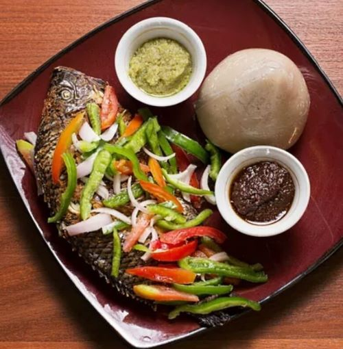

Banku with Tilapia

Description
Banku with tilapia fish is an authentic and very popular dinner recipe from Ghana. It can be made with a quick banku recipe with delicious stuffed tilapia fish and a homemade hot pepper sauce with fresh sliced vegetables.
Here is how to prepare it
First you'll need...
Ingredients
For the hot pepper sauce
- 2 medium onions, chopped
- 1-2 scotch bonnet peppers, deseeded and chopped
- 1 can tomatoes, unseasoned
- Fine salt, to taste
- 1-2 tbp granulated white sugar, to taste
For the banku
- 2 Cups corn dough
- 1 Cup cassava dough
- 1 tsp fine salt
- 1.5-2 cups water, room temperature
For the tilapia
- 1-2 whole tilapia fish, gutted, cleaned, and scaled
- 2-3 tbsp olive oil
- 2 garlic cloves, minced
- Handful Fresh herbs of your choice (parsley, dill, or thyme work well) 2 lemons
- Freshly ground black pepper, to taste
- 1 medium red onion, sliced
- 1 green bell pepper, deseeded and sliced
- 1 red bell pepper, deseeded and sliced
Directions
For the hot pepper sauce
- First, preheat your oven to 400ºF (200ºC). Line a baking or roasting tray with non-stick baking paper.
- Start by making your pepper sauce. Combine all of the ingredients (except for the salt) inside a blender or food processor. Then, pulse the ingredients until they are chunky. Do not blend them!
- Remove the chunky hot pepper sauce from the blender and place it inside a small sauce pan. Then, bring the sauce to a boil.
- Once boiling, reduce the heat and allow it to simmer for 10 minutes. Adjust the flavor with salt and sugar until you like it.
- Remove it from the heat and set it aside.
For the roasted whole tilapia
- To start, if you haven't already, prepare the whole tilapia. Make sure the inside is clean and that the scales and fins are removed. Then, pat the fish dry before you garnish and roast it.
- Place the tilapia fish inside the roasting tray. Then, score the surface of the fish by making two or three incisions on each side.
- Next, brush the entire fish well with olive oil. It includes both sides as well as the cavity of the fish.
- Then, spread the minced garlic inside the cavity and stuff in the fresh herbs. Next, slice one of the lemons and place the slices on the herbs inside the fish.
- Squeeze some lemon juice over the surface of the tilapia. Finally, add sea salt and freshly ground black pepper on onto both sides of the fish.
- Roast the tilapia for 15-25 minutes, depending on its size. The internal temperature of the tilapia should be 145ºF (62ºC).
For the banku
- While your tilapia is roasting, make the banku. Start by mixing together the corn dough, cassava dough, and salt in a saucepan or pot.
- Once mixed, place it over high heat and allow it to cook. As it cooks, add some more water and stir continuously. Keep adding water until the mixture comes together. It shouldn't be firm, but it should be solid dough.
- Lower the heat to medium-low. Add a lid on the pot and allow the banku to steam for 5 minutes.
- Then, remove it from the heat and give it one final stir. Then, place large scoops of banku dough into a damp bowl and roll it until it is shaped nicely.
Assemble the banku with tilapia fish
- To serve this dish, first, place the roasted fish on a large serving platter. Then, drizzle some more lemon juice over it. Place the banku balls around the fish, or serve it separately.
- Drizzle some hot pepper sauce over the cooked tilapia and garnish it with sliced vegetables and more herbs.
Homepage